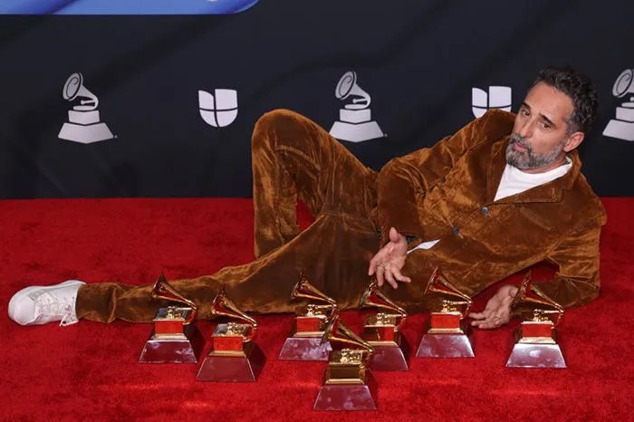

Jorge Drexler

Albums
- Taraca
- Te llevo tatuada
- Amar y ser amado
- Las palabras
- Tinta y Tiempo
- Tocarte
- Tinta y Tiempo
- Amor al Arte
- Salvavidas de Hielo
- Silencio
- Telefonia
- Estalactitas
- Bailar en la cueva
- Bailar en la cueva
- Data data
- Bolivia (feat.Caetano Veloso)
- Amar la trama
- Las transeuntes
- Mundo abisal
- Toque de queda (feat.Leonor Watlint)
Premios
- 2012, Premio La Mar de Músicas
- 2011, Premios Goya a Mejor canción original "Que el soneto nos tome por sorpresa" (Lope)
- 2014, Premios Grammy Latinos Grabación del Año, "Universos Paralelos" con Ana Tijoux.
- 2014, Premios Grammy Latinos Álbum Cantautor, "Bailar en la cueva".
- 2018, Premios Grammy Latinos Grabación del año, "Telefonía".
- 2018, Premios Grammy Latinos Canción del Año, "Telefonía".
- 2018, Premios Grammy Latinos Álbum Cantautor, "Salvavidas de hielo".
- 2021, Premios Grammy Latinos Canción pop rock, "Hong Kong" con C. Tangana & Andrés Calamaro.
- 2021, Premios Grammy Latinos Canción Alternativa, "Nominao" con C. Tangana.
- 2022, Premios Grammy Latinos Grabación del Año, "Tocarte" con C. Tangana.
- 2022, Premios Grammy Latinos Canción del Año, "Tocarte" con C. Tangana.
- 2022, Premios Grammy Latinos Canción Alternativa, "El día que estrenaste el mundo".
- 2022, Premios Grammy Latinos Canción en Portugués, "Vento Sardo" con Marisa Monte.
- 2022, Premios Grammy Latinos Álbum Cantautor, "Tinta y tiempo".
- 2022, Premios Grammy Latinos Canción pop, "La guerrilla de la concordia".
- 2022, Premios Grammy Latinos Mejor arreglo, "El plan maestro".
- 2024, Premios Grammy Latinos Canción del año, "Derrumbe".
- 2024, Premios Grammy Latinos Canción cantautor, "Derrumbe".
- 2025, Premios Grammy Latinos Canción pop rock, "Desastres Fabulosos" con Conociendo Rusia.